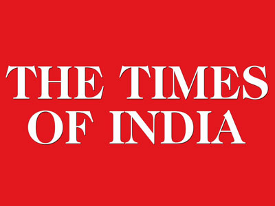
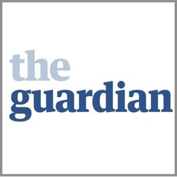

The Times of India (TOI) is an Indian English-language daily newspaper owned by The Times Group. It is the fourth-largest newspaper in India by circulation and largest selling English-language daily in the world according to Audit Bureau of Circulations (India).[1][2] It is the oldest English-language newspaper in India still in circulation,[3] with its first edition published in 1838. It is the second oldest Indian newspaper still in circulation after the Bombay Samachar. Lord Curzon the then Viceroy of India called The Times of India "the leading paper in Asia".[4][5] In 1991, the BBC ranked The Times of India among the world's six best newspapers.[6][7]
It is owned and published by Bennett, Coleman & Co. Ltd. which is owned by the Sahu Jain family. In the Brand Trust Report 2012, The Times of India was ranked 88th among India's most trusted brands and subsequently, according to the Brand Trust Report 2013, The Times of India was ranked 100th among India's most trusted brands. In 2014 however, The Times of India was ranked 174th among India's most trusted brands according to the Brand Trust Report 2014, a study conducted by Trust Research Advisory.[8][9]

The Guardian is a British daily newspaper, known from 1821 until 1959 as the Manchester Guardian. Along with its sister papers The Observer and the Guardian Weekly, The Guardian is part of the Guardian Media Group, owned by the Scott Trust. The Trust was created in 1936 "to secure the financial and editorial independence of the Guardian in perpetuity and to safeguard the journalistic freedom and liberal values of the Guardian free from commercial or political interference." The Scott Trust became a limited company in 2008, with a constitution to maintain the same protections for the Guardian. Profits are reinvested in journalism rather than to benefit an owner or shareholders.[2]
The paper's readership is generally on the mainstream left of British political opinion.[3][4] The newspaper's reputation as a platform for liberal and left-wing editorial has led to the use of the "Guardian reader" and "Guardianista" as often (but not always) pejorative epithets for those of left-leaning or politically correct tendencies.[5][6]
The Guardian is edited by Katharine Viner, who succeeded Alan Rusbridger in 2015.[7][8] In 2016, The Guardian's print edition had an average daily circulation of roughly 162,000 copies in the country, behind The Daily Telegraph and The Times.[1] The newspaper has an online UK edition as well as two international websites, Guardian Australia (founded in 2013) and Guardian US (founded in 2011). The newspaper's online edition was the fifth most widely read in the world in October 2014, with over 42.6 million readers.[9] Its combined print and online editions reach nearly 9 million British readers.[10]
Notable scoops include the 2011 News International phone hacking scandal, in particular the hacking of murdered English teenager Milly Dowler's phone.[11] The investigation led to the closure of the UK's biggest selling Sunday newspaper, and one of the highest circulation newspapers in the world, the News of the World.[12] The newspaper also released news of the secret collection of Verizon telephone records held by US President Barack Obama's administration in June 2013,[13] and subsequently revealed the existence of the PRISM surveillance program after it was leaked to the paper by NSA whistleblower Edward Snowden.[14] In 2016, it led the investigation into the Panama Papers, exposing the then British Prime Minister David Cameron's links to offshore bank accounts.
The Guardian has been named Newspaper of the Year four times at the annual British Press Awards, the most recent in 2014 for reporting on government surveillance.[15] The paper is still occasionally referred to by its nickname of The Grauniad, given originally for the purported frequency of its typographical errors.[16]